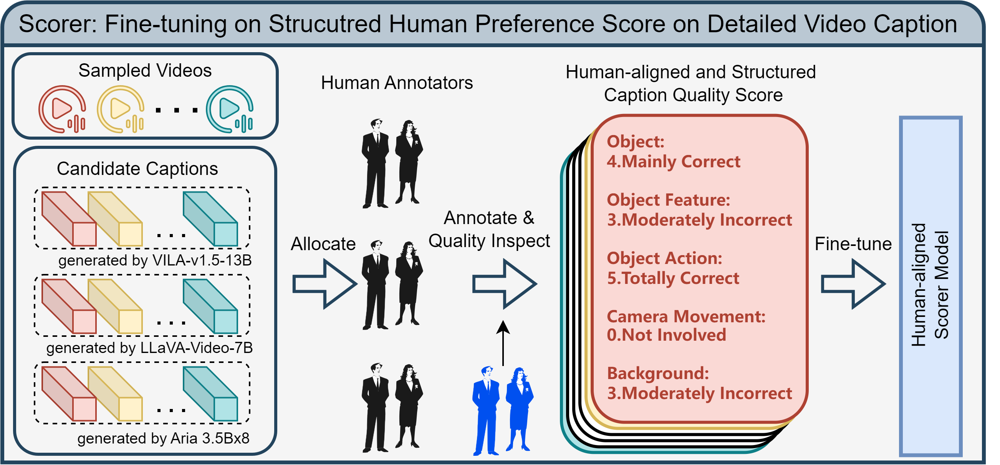
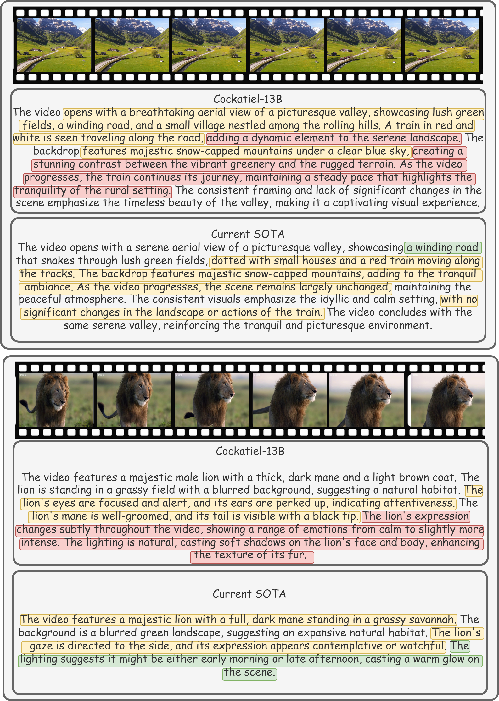

🔥News
✅ 2025.07.29 We released UniCoT-7B-MoT, which extends Bagel-7B-MoT model to perform text-to-image generation witn self-reflection reasoning mechanism.
🔥 We are still working on the this project to implement more kinds of Chain-of-Thought (CoT) mechanism into unified model, please stay tuned!
Overview

Chain-of-Thought (CoT) reasoning has significantly enhanced LLM performance on complex text tasks by encouraging interpretable, step-by-step problem solving. However, extending this paradigm to multimodal tasks presents new challenges. In vision-language scenarios, human cognition depends on understanding how visual states evolve over time, inferring causality and planning based on object movements, spatial interactions, and transformations, which are critical for physical reasoning, visual planning, and story comprehension.
To bridge this gap, we introduce the Unified Chain-of-Thought (Uni-CoT) framework, designed to empower Multimodal Large Language Models (MLLMs) to perform structured and interpretable reasoning across both text and vision. Uni-CoT first decomposes a given multimodal task into simple, modular steps, and then processes each step either sequentially or in parallel, as illustrated below. Thus, it enables more systematic and scalable reasoning across modalities.
Specifically, the Uni-CoT reasoning pipeline consists of four key components:
1. Planning: Decompose the complex task into a sequence of simpler, manageable subtasks.
2. Subtask Execution: Execute each subtask using the unified model with step-by-step reasoning.
3. Self-Check: After completing each subtask, perform a validation check to ensure the intermediate result aligns with the intended goal.
4. Final Result: Aggregate the validated subtask results to generate the final output.
With these designs, our Uni-CoT framework aims to enable unified large models to tackle a wide range of challenging multimodal applications, including:
Highly reliable image generation/editing
Visual planning
Geometric and physical reasoning
Human-aligned Detailed Video Caption Scorer

As illustrated in the above figure. The core of Cockatiel captioner relies on a human-aligned caption scorer, which assess the training value of each candidate synthesized caption from the perspective of dimension-specific video-caption alignment and human preference. In this way, we can avoid the impairment introduced by the synthetic nature of our data and align them with human preferences, eventually bootstrapping model performance on VDC and encouraging the generation of human-preferred captions. However, to the best of our knowledge, no public model nor training dataset currently suits this need, so we have to build it on our own. Specifically, we meticulously annotate a dataset of structured human preference score on video detailed captions and fine-tune VILA-v1.5-13B on it.
Cockatiel Captioner
To infuse VDC models with captioning knowledge on every fine-grained dimension of video-caption alignment and human preferences, we devise a three-stage training pipeline to implement the proposed ensembling synthetic and human preferenced training while meet common engineering need. Specifically, we curate data employing the scorer-based selection policy with threshold, which assess the training value of captions generated by three base models, LLaVA-Video-7B, VILA-v1.5-13B, Aria3.5Bx8. Moreover, it scores each candidate caption and exclusively involve the one with the highest score for training if it exceeds the preset threshold. With the abovementioned synthetic data reject sampling procedure, we then train our Cockatiel-13B captioner based on the data, and further distill Cockatiel-8B from Cockatiel-13B.
Results
We provide some specific comparison cases between Cockatiel-13B and leading VDC models in the below figure. For more detailed comparisons or more quantitative and qualitative results, please refer to our paper

Acknowledgement
The project page template is borrowed from
DreamBooth.